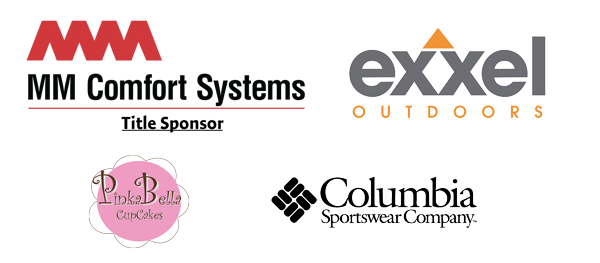

Sponsorships
MM Comfort Systems has made a generous contribution to further their commitment to keeping those on and off the streets warm for the winter. " MM Comfort System will also provide one free furnace to a randomly selected Sleepless in Seattle donor at the end of the campaign!
Exxel Outdoors is providing over 2,000 deeply-discounted sleeping bags, covering the freight costs from Alabama to Seattle, and donating additional sleeping bags.
Columbia Sportswear has donated 200 warm beanies to be distributed alongside sleeping bags.
PinkaBella Cupcakes will be donating a cupcake with every sleeping bag on the "Big Give" to the homeless throughout our community.